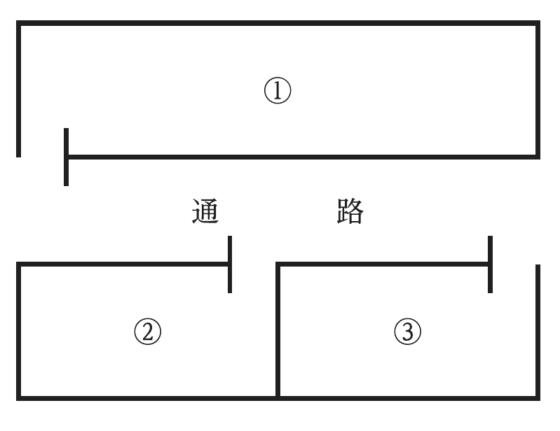
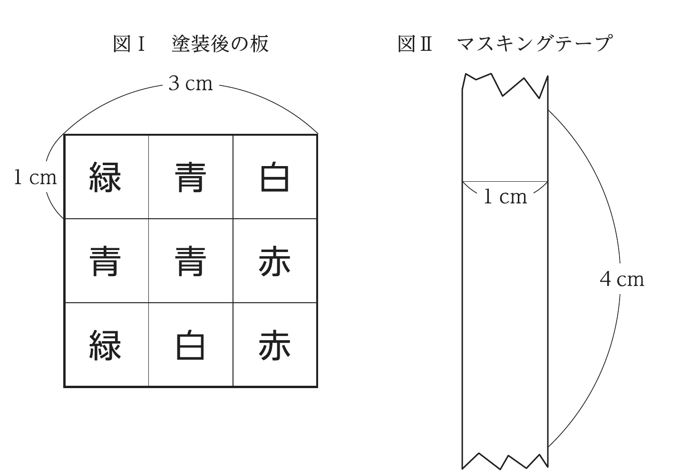
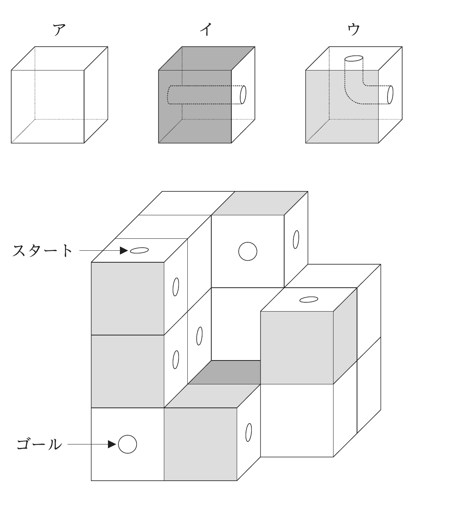
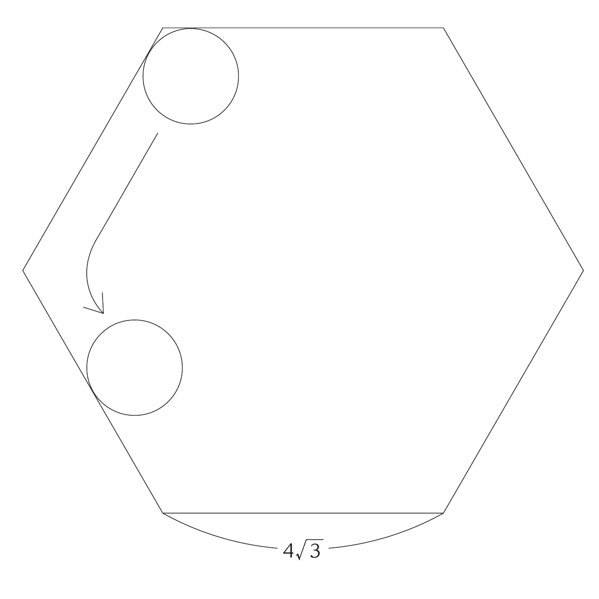
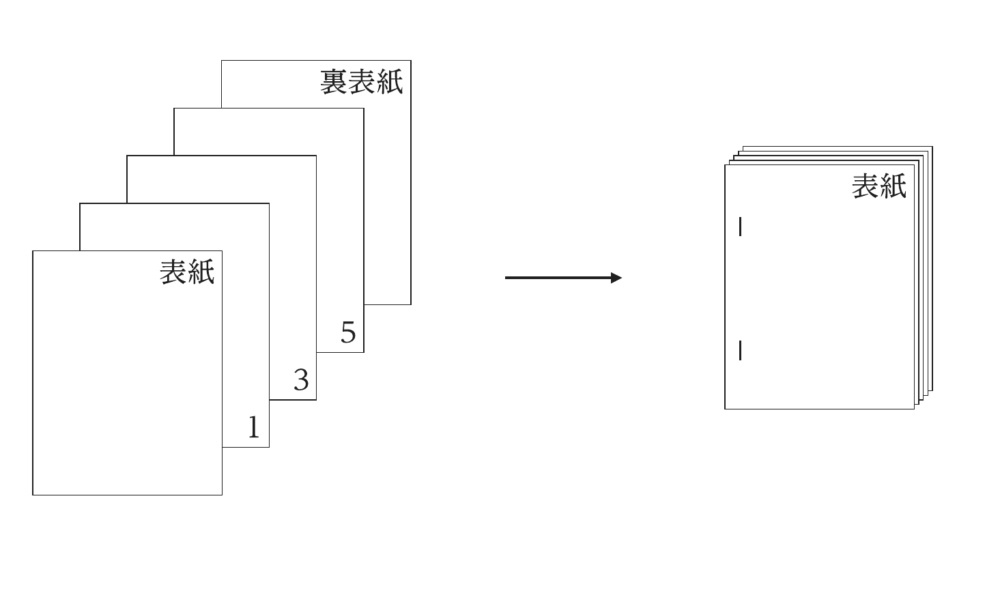
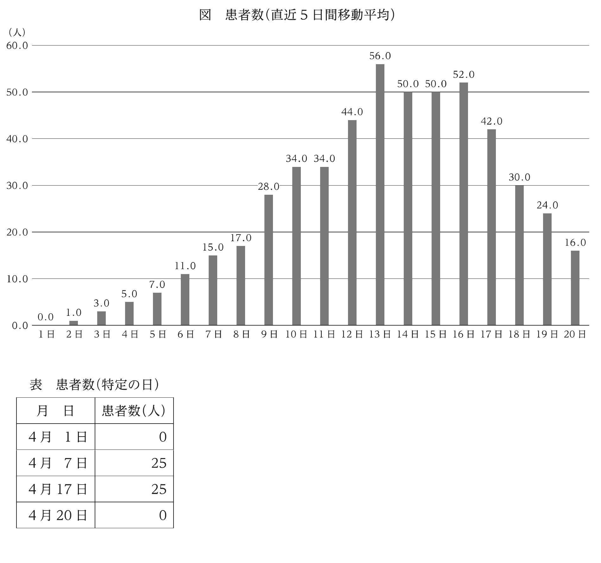
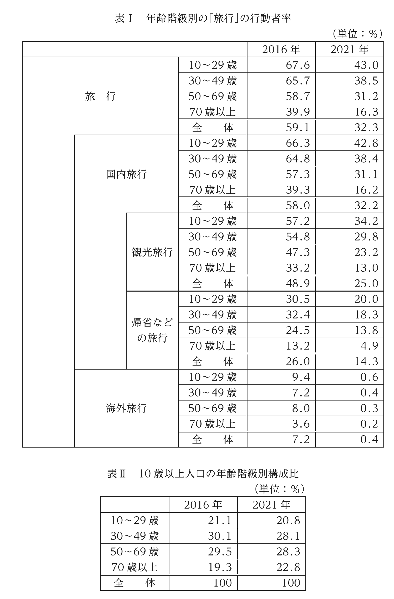
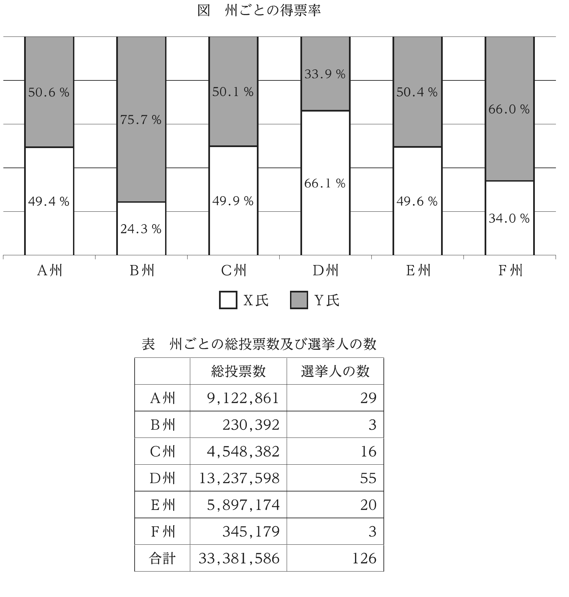

2025年度 基礎能力試験Ⅰ部 解説
原本：25I部.pdf。全24問、制限時間120分。正答は原本PDFの最終35ページの正答番号表に掲載されている。「原本PDFのページ番号」は表紙を1として数えたページ、「冊子」は紙面下の番号である。図表や条件は、必要に応じて原本PDFで確認してください。
初回は時間を気にせず、自分で考えてから解説を読む。文章理解は「本文のどこを根拠にしたか」、数的処理は「条件をどの式・表へ変えたか」を言えるようにする。慣れたら120分で解き、止まった問題を一度飛ばす練習も行う。以下は問題文の再掲ではなく、独自の解法と復習用の説明である。
問1｜道徳教育における「名づけ」
正答：4。原本PDFの2〜3ページ／冊子1〜2ページ。
何を問うか。 筆者が認める利点と、同時に指摘する欠点を両方読む内容一致問題。
本文の流れ。 道徳には具体的な規則と抽象的な理念、外面的な行動と内面的な価値づけなど複数の面がある。子どもは正義などを具体的体験として知っていても、それをまとめる名前をまだ知らない。「名づけ」は体験を整理する利点がある一方、考え方を固定する危険も持つ。教師はその意味を理解すべきだ、という構成である。
各肢の判断。
- 1 × 交通道徳は違いを説明するための例。本文は「最も本質的・典型的」と順位づけしていない。
- 2 × 習慣・法律や宗教に「近づく面がある」ことを、「最終的にそれになる」と変えている。関連と帰結は別。
- 3 × 子どもが一般化の仕方を知らない点は合うが、「一義的な意味」を教え込むことを筆者が推奨したわけではない。硬直化への警戒と衝突する。
- 4 ○ 名前によって具体的体験が整理され、心の中で位置づけられること、その意義を教師が理解すべきことの双方が本文にある。
- 5 × 欠点があるという指摘から、「名づけ自体を差し控えるべき」と筆者の処方箋を勝手に作っている。
一般知識・当日のコツ。 内容一致で大事なのは自分の教育観ではなく、本文に書かれた範囲。「〜の一面」と「最終的に〜になる」、「危険がある」と「やめるべき」を区別する。具体例を筆者の中心主張へ格上げした肢にも注意。
問2｜社会的ジレンマ
正答：5。原本PDFの4〜5ページ／冊子3〜4ページ。
順に理解する。 本文は二条件を示す。①一人の立場では裏切りが得になる。②全員が裏切った場合の利益は、全員が協力した場合より小さい。このため個別に得を追うと、集団全体では悪い結果に陥り得る。
例えば皆がごみを持ち帰れば公園を快適に使えるが、自分だけ放置すれば手間を省ける。しかし全員が放置すれば公園が汚れ、皆が損をする。このような私的利益と全体利益の対立が中心である。
- 1 × 私的に得という条件から「大損するまで止まらない」と将来を断定している。本文は解決不可能と述べていない。
- 2 × 「互いに首を絞め合う」は皆が裏切ることで悪い結果を招くこと。正直者同士の監視の説明ではない。
- 3 × 対立するのは二人の私的利益同士ではなく、私的利益と全体利益。
- 4 × 問題は協力と裏切りの選択構造にあり、「正直者が裏切りを選ぶ状況」という限定は本文の説明を変えている。
- 5 ○ 協力では個人的に損をし得るが、皆が利己的に振る舞えば集団全体が大損し得るという二条件をまとめている。
一般知識・当日のコツ。 公共財のただ乗りや共有地の悲劇にも関係する。ただし知っているゲーム理論を本文へ付け加えて解かない。「いつも」「必ず」と「場合がある」の強さを比較しよう。
問3｜視覚の位置の恒常性
正答：5。原本PDFの6〜7ページ／冊子5〜6ページ。
本文の仕組み。 自分で目を動かすと網膜像はずれる。しかし脳が目の運動に伴うずれを予測し、打ち消す処理をするので、世界は安定して見える。目を受動的に動かす場合にはこの予測が働かない、という実験上の違いが根拠になっている。
三つの状況で整理する。 通常は「目を動かす指令＋網膜像の動き」が対応する。眼筋麻痺の場合は「指令はあるが眼球は動かない」ため、打消し側だけが働き動いて見える。受動的に眼球が動く場合は「指令はないが網膜像が動く」ため、やはり動いて見える。本文の実験記述を理解するための整理であり、自分の眼球を押す実験をする必要はない。
- 1 × 脳の働きが外見から分かりにくいことは書かれるが、胃・肺・心臓の研究との歴史的な遅速比較まではない。
- 2 × 知覚が脳の推論によることと、対象物そのものが現実に存在しないことを混同している。
- 3 × 恒常性とは、眼を動かしても知覚世界が安定すること。スマホ映像の中の物体が物理的に静止しているという定義ではない。
- 4 × 指で動かす受動的運動では打消しの予測がなく、止まって見えるという説明は合わない。
- 5 ○ 目だけでなく首・身体の動きも統合し、対象を安定的に表すという結論をまとめている。
一般知識・当日のコツ。 科学文は「仮説→条件を変えた実験→結果→結論」を表にする。実験を理解できれば細かい人名や年号を覚えなくても解ける。
問4｜リズムと音程の連続性
正答：1。原本PDFの8ページ／冊子7ページ。
何を問うか。 空欄直前の変化の方向と、文章全体の対比をつなぐ問題。
本文では、ゆっくりしたパルスは一つずつ前後関係のあるリズムとして知覚され、速くなるとまとまった音の高さとして知覚されると説明する。作品の説明でも、前半は「連打を速める→可聴音」、後半は「高音から周波数を下げる→音の粒が見える」。したがって空欄は逆方向の変化、音程として聞こえていたものがパルスのリズムになるという肢1。
空欄を補うと： 「ついには最低音域で音の粒がボロボロと見え始め、かつて音程と聞こえたものはパルスのリズムに変わってしまう。」
他の肢。 2の「意識すれば分解できる」という意志の働きは述べられていない。3の美しさは主題から外れる。4は周波数を下げているのに頻度が高まると逆転。5は周波数によって知覚が変わるという本文の中心に反する。
一般知識・当日のコツ。 高い・低い、増加・減少、具体・抽象など、変化の向きに矢印を付ける。可聴域について自分の知識と表現の細部が気になっても、この設問は本文内の対比に沿って空欄を選ぶ問題である。
問5｜先史人類による火の利用
正答：4。原本PDFの9〜10ページ／冊子8〜9ページ。
本文の要点。 ヨーロッパで25万年前に調理や交流のための火が使われた可能性を、遺跡の化学分析などから論じる。古い火の使用の証拠と、調理という特定目的を示す証拠は分けている。燃焼温度が調理向きだったこと、近隣に豊富でない腐朽松材の利用が手掛かり。
- 1 × アフリカ・中東の70万年以上前の説明は火を制御した証拠。調理目的まで確定していない。
- 2 × 従来の組織的利用の証拠は約20万年前で、今回5万年さかのぼった。以前から25万年前の調理を体系的に示していたというのは逆。
- 3 × 燃焼温度から暖房や動物を追い払う用途より調理向きと述べる。炉床ごとに別用途へ最適化されていたとは書かれていない。
- 4 ○ 腐朽した松材の痕跡があり、松が現場周辺に豊富でないことから、意図的な収集の可能性を推論している。
- 5 × 炉床から食物痕跡は回収されていない。分析対象は近くの石器で、料理再現をしたとも書かれていない。
読むコツ。 may、might、suggestは可能性や推論を表す。evidence of controlled fireとevidence for cookingを混同しない。科学記事では「どこから見つかったか」「何をまだ確認できていないか」に線を引くと誤答を切りやすい。
問6｜経営者報酬と気候目標
正答：5。原本PDFの11〜12ページ／冊子10〜11ページ。
本文の要点。 気候目標と経営者報酬を連動させる企業が増えている。目標は科学に基づき、測定可能に分解し、事業の特徴に対応させる。ただし経営者が制御できない要因にも配慮し、報酬設計に柔軟性を持たせるべきだという論旨。
具体例では、排出量の多い企業を買収すると合算の排出量が一時的に増える。この場合、買収先分を報酬評価から除くなど、本人が制御できる部分を評価する方法が考えられる。目標に少し届かなくても、達成の程度に応じて部分的な報酬を与える案もある。
- 1 × 取締役会がためらうケースが多いのではなく、連動に肯定的な企業が増えている。
- 2 × 科学的指標と事業モデルは対立的な優先順位として述べられていない。発言者の対応も不正確。
- 3 × 業種ごとの重点指標は示すが、業種間の報酬額の大小比較はない。
- 4 × 本文は排出量の多い企業の買収で目標達成が難しくなる例。少ない企業を買収して達成しても報酬不払い、ではない。
- 5 ○ 制御できない影響を調整する柔軟な評価という本文の提案と一致する。
一般知識・当日のコツ。 compensationはこの文脈では報酬。買収の例は「目標を緩めて何でも認める」話ではなく、評価対象の区分の話。複数の専門家が登場する記事は、名前より「各段落の提案」を短くまとめると速い。
問7｜南極半島の植生増加
正答：1。原本PDFの13〜14ページ／冊子12〜13ページ。
本文の要点。 衛星画像等による研究は、南極半島の主にコケ類の植生面積が約40年で10倍以上に増え、近年は増加速度も上がったと示す。土壌形成が進むと外来種に適した環境となり、在来生物への脅威が懸念される。ただし研究手法で検出しにくい植生もあり、把握された面積がすべてとは限らない。
- 1 ○ 10倍超という長期的増加と、近年の加速を正しく述べる。
- 2 × 南米の方へ伸びるという半島の位置説明を、研究者の渡航経路へ変えている。
- 3 × 30％超は増加速度の加速についての数字で、人が運ぶ種子と鳥が運ぶ種子の比較ではない。
- 4 × 化石燃料による温暖化の話を、粉塵が氷上の微生物へ悪影響を与える話へ変えている。
- 5 × コケの分布は増加している。外来種への懸念を、在来のコケの減少と外来種の拡大が既に確認されたという報告へすり替えている。
読むコツ。 数字には単位と対象を添える。「面積が10倍」「増加速度が30％超加速」を別々に記録する。将来の危険を示すcouldやpotentiallyを、すでに起きた事実と読み替えない。
問8｜対話と意見の対立
正答：2。原本PDFの15〜16ページ／冊子14〜15ページ。
本文の要点。 大学の対話の場は、対立を完全に消すためではなく、互いの視点を理解するために設けられる。礼節を求める働きかけも、抗議や論点そのものを封じるなら問題になる。信念を放棄する必要はなく、相手の尊厳を認めながら話すことが大切。
- 1 × 戦争について議論する場の説明であり、その話題を避けるための監視ではない。
- 2 ○ 対立の抑制だけを目的にすると本来の道徳的問題が置き去りになる危険を、19世紀の奴隷制をめぐる教会の例が示している。
- 3 × 教会指導者は議論の場を開いたのではなく、中立を保とうとして議論を抑えたという例。
- 4 × 対話の意味はしばしば誤解されると述べており、広く理解が定着したという結論ではない。
- 5 × 論破が目的ではないことは合うが、自分の意見を主張しないことまでは求めない。信念を捨てる必要はないと明記する。
一般知識・当日のコツ。 respectful disagreementは「敬意を持ちながら意見が異なること」。civil discourseを単なる迎合と訳さない。対比の一方だけを取り出し「反論しないのがよい」と極端にする肢に注意。
問9｜慢性的孤独と一人の時間
正答：2。原本PDFの17ページ／冊子16ページ。
解き方。 空欄の後には、solitudeはその反対となり得ること、感情調整・創造的思考・自己理解に役立つことが続く。したがって前半には、慢性的孤独が健康を脅かすという否定的性質を置く。
本文は三つを区別している。chronic lonelinessは望むつながりが欠けているという慢性的な苦痛。being aloneは物理的に一人という状態。solitudeは他者の要求から離れて過ごす、中立〜肯定的な時間。人に囲まれていても孤独を感じ得るし、一人でも充実して過ごせる。
- 1 × 慢性的孤独が社会的に賞賛されるとはない。
- 2 ○ 健康への脅威と、一人の時間の有益さが明確に対比される。
- 3 × 慢性的孤独が活動的にするという根拠がない。
- 4・5 × 一時的な孤独について本文は慢性的なものほど問題でない場合もあるとする。関係破壊や抑うつへ一般化していない。
当日のコツ。 While A, B can be the oppositeという形なら、まずBの性質を確かめ、その反対を選ぶ。同じ「孤独」と訳せそうでも、修飾語chronic／transientとsolitudeの違いを消さない。
問10｜AIによる診断を論じる段落整序
正答：3（ウ→ア→イ→オ→エ）。原本PDFの18ページ／冊子17ページ。
順に接続する。 冒頭は従来の精神医学的診断が時間を要し、主観的になり得るという問題提起。これをThat is whyで受けるウが先頭となり、新しいAIの試みを導入する。次にアがthese AI modelsを受け、音声の音響的特徴を分析する仕組みを説明。イは声の高さ・調子・リズムなどの個々の要素から、モデルが見抜くパターンへ説明を深める。
その後、オがAIの従来利用、すなわちインタビューの文字起こしをLLMで分析する方法へ話を移す。エのBut text-based AIはこの文字情報ベースの方法の限界を述べる。最後の固定段落はMoreoverでLLMの幻覚というさらに別の欠点を追加し、新しい方式が単語の中身ではなく話し方に着目する理由へつなぐ。
他の並びがだめな理由。 イはthese modelsの先行説明が必要なので先頭に置けず、肢1・2が消える。オ→エ→固定末尾がまとまるため、エをオより先に置く4、エと固定末尾の間に新方式の説明を挟む5も不適切。
一般知識・当日のコツ。 段落整序は全部を訳す前に、指示語these、接続語But／Moreover、初出と既出の関係を調べる。固定された末尾の直前を決めると、一気に候補が減る。この記事の性能記述は本文内容の整理であり、AIだけで医療診断できるという一般的結論ではない。
問11｜参加者の集合を重なりなく数える
正答：1。原本PDFの19ページ／冊子18ページ。
何を問うか。 「〜にも参加」と「〜のみに参加」を区別し、人数を排他的な領域へ分ける。
絵画をP、木工をW、陶芸をT、生け花をFとする。木工参加者は絵画・生け花へ参加しない。絵画だけの人もいない。したがって、あり得る領域は次の8個だけ。
| 参加した教室 | 人数の置き方 | 求めた人数 |
|---|---|---|
| 木工だけ | 16−x | 10 |
| 陶芸だけ | 16 | 16 |
| 生け花だけ | x | 6 |
| 木工・陶芸だけ | x | 6 |
| 絵画・生け花だけ | x | 6 |
| 絵画・陶芸だけ | 2t＋2 | 8 |
| 陶芸・生け花だけ | t＋2 | 5 |
| 絵画・陶芸・生け花 | t | 3 |
式を作る。 3種類参加者をt人とする。「陶芸と生け花のどちらにも」は、その二つだけのt＋2人に3種類のt人を加えた2t＋2人なので、絵画・陶芸だけも2t＋2人になる。生け花参加者は60−40＝20人だから、x＋x＋(t＋2)＋t＝20、すなわちx＋t＝9。全員を足すと 36＋2x＋4t＝60、つまりx＋2t＝12。差を取ってt＝3、x＝6。
肢の検算。 1の絵画・木工どちらにも不参加は、陶芸だけ16＋生け花だけ6＋陶芸生け花だけ5＝27人。2の絵画陶芸両方は8＋3＝11人。3の木工不参加は60−(10＋6)＝44人。4の生け花参加・陶芸不参加は6＋6＝12人。5の3種類参加者は3人。
一般知識・当日のコツ。 いきなり4集合の複雑なベン図を描くより、禁止条件から領域を消す。「両方」は第三の集合にも属する人を含み、「二つのみ」は含まない。この一語の違いが最重要。
問12｜食品選択の数え上げ
正答：2（30通り）。原本PDFの20ページ／冊子19ページ。
順に解く。 全員の選択肢の数はA3、B3、C2、D2、E2なので、制約がなければ3×3×2×2×2＝72通り。このうち「焼きそばを誰も選ばない」「牛丼を誰も選ばない」を取り除く。
- 焼きそばなし：Aは2択、Dは牛丼1択。他は変わらず、2×3×2×1×2＝24通り。
- 牛丼なし：Cはチャーハン1択、Dは焼きそば1択。他は変わらず、3×3×1×1×2＝18通り。
- 両方なし：Dには食べられるものがなく0通り。
よって包除原理により 72−24−18＋0＝30通り。
別解。 Dが焼きそばなら牛丼を選べるのはCだけなのでC牛丼、A3×B3×E2＝18通り。Dが牛丼なら焼きそばを選べるのはAだけなのでA焼きそば、B3×C2×E2＝12通り。合計30。二つの場合はDの選択が異なるので重複しない。
他の肢・当日のコツ。 27・33・36・39はいずれも二つの必要条件を正しく満たして数えた結果ではない。食品が同じでも選ぶ人が違えば別の組合せ。数に制限がないので在庫や先着順は考えない。選択肢の少ないDから分ける別解が特に速い。
問13｜申請の重複と持ち帰る人数
正答：3。原本PDFの21ページ／冊子20ページ。
条件の確認。 A〜Eが申請するのは、それぞれ商品を一つだけ。A・Cは豚か羊、Bは牛か鶏、Dは豚、Eは牛。重複した商品はF、申請ゼロの商品はGが持ち帰る。持ち帰らない人が3人なので、持ち帰る人は7−3＝4人。
順に絞る。 商品も4種類しかないので、4人が持ち帰るには、各人が1種類ずつを持ち帰らなければならない。FやGが2種類をまとめて持ち帰る状態は不可。
Bが牛を選ぶと、Eと重なって牛をF、誰も申請できなくなる鶏をGが持ち帰る。さらにA・C・Dの3人は豚と羊の2種類に申請するため、どちらかが必ず重複する。Fが牛以外も持ち帰り、受取人数が4人に達しない。したがってBは鶏を選び、鶏を申請できるのはBだけなので、Bが鶏を持ち帰る。
残る可能性。 A・Cが豚と羊へ分かれれば、豚はF、羊はAまたはC。A・Cがともに羊なら羊はF、豚はD。A・Cがともに豚だとFが豚、Gが羊、Bが鶏、Eが牛を持ち帰り、これも4人となる。どの場合も鶏＝Bは変わらない。
各誤肢。 牛はEであり1は誤り。豚はDの場合もFの場合もあり2は確実でない。羊はA・C・F・Gのいずれにもなり得るので4・5も確実でない。
一般知識・当日のコツ。 「確実にいえる」は一例を作るだけでは足りない。否定した場合に人数条件と矛盾することを示すと速い。商品数と受取人数が同じという、全体の個数制約に最初に注目する。
問14｜2回のカード得点と順位
正答：3。原本PDFの22ページ／冊子21ページ。
重要な条件。 原本は「二人以上の者が同じ順位になることはなかった」。つまり同点はない。1〜7を各回1回ずつ使うので、全員の合計点は2×(1＋…＋7)＝56点。
合計点から決める。 A3点が最下位、B6点、C6位なのでCは4点か5点。F11点より上に2位G・1位Eがいるため、Gは少なくとも12点、Eは少なくとも13点。残るDはBより上で少なくとも7点。この最小値を足すと、A3＋B6＋C4＋D7＋E13＋F11＋G12＝56。すでに総点56に一致するので、全員がこの最小値ちょうどに確定する。
各回へ分ける。 Eは1回目7だから2回目6。G合計12は5＋7が必要で、1回目7はEが使うためGは5、7。F合計11は、すでに使用した数字を避けると6、5。Dは3、4。残りからA・B・Cを埋めると次表となる。
| 人 | A | B | C | D | E | F | G |
|---|---|---|---|---|---|---|---|
| 1回目 | 2 | 4 | 1 | 3 | 7 | 6 | 5 |
| 2回目 | 1 | 2 | 3 | 4 | 6 | 5 | 7 |
| 合計 | 3 | 6 | 4 | 7 | 13 | 11 | 12 |
| 順位 | 7 | 5 | 6 | 4 | 1 | 3 | 2 |
AとCの埋め方も確認する。Aを1回目1・2回目2とすると、C合計4は1＋3も2＋2も使えなくなる。よってAは2＋1、Cは1＋3、残りBは4＋2。
肢の検算。 A1回目は2、B2回目は2、C2回目は3、Dは4位、Fは6と5。正しいのは3だけ。
当日のコツ。 順位条件と総和がある問題では、下限を足す方法が強力。カードを一枚ずつ試す前に「合計点だけ」を確定させる。最後は各行が1〜7を一度ずつ使っているか検算する。
問15｜ブース移動の時系列

正答：1。原本PDFの23ページ／冊子22ページ。
図の読み方。 通路の片側が①、反対側が②・③。BとCは毎回通路の反対側なので、一方が①にいる間、他方は②か③にいる。訪問順が逆という条件も合わせる。
順に決める。 Cは③の直後に①へ入るため、Cの順番は②→③→①、Bは①→③→②になる。もし①が二人の訪問順の中央なら、最初の回で二人とも②・③側にいて反対側の条件を満たせない。Aは第1・2回が②、その後①。AとBが①で重なるのは2本だから、Bが①にいるのは第4回までと分かる。従ってBは第5回③、第6回②、Cは第5・6回①。
DはCと同じ時に③から①へ移る。Cと異なる訪問順なのでDは③→①→②となり、第1〜4回③、第5回①、第6回②に確定する。
Eの訪問順は他の人と違い、Aとの一致は②で1本だけ。①→②→③だと最後の③でAと重なるため不可。残る③→②→①で、②への移動は第2回、①への移動は第6回に限られる。その結果Aは第3〜5回①、第6回③となる。
| 人 | 第1回 | 第2回 | 第3回 | 第4回 | 第5回 | 第6回 |
|---|---|---|---|---|---|---|
| A | ② | ② | ① | ① | ① | ③ |
| B | ① | ① | ① | ① | ③ | ② |
| C | ② | ②または③ | ②または③ | ③ | ① | ① |
| D | ③ | ③ | ③ | ③ | ① | ② |
| E | ③ | ② | ② | ② | ② | ① |
Cは②から③へ一度だけ移るので、第2回③・第3回②という逆戻りはない。
肢の検算。 1は第5回A・Dが①で一致。2は第4回B①・D③で不一致。3はCが第3回②ならEと一致するので「一致しなかった」は確実でない。4はBが①を出てからDが①へ入るので同時鑑賞なし。5はCが第2回まで②にいればEと一致するので確実でない。
一般知識・当日のコツ。 回数を横軸にして、連続滞在を帯として描く。一部が未確定でも、選択肢が問う第5回などだけ確定すれば解答できる。「全員の予定を完全に一つに決める」必要はない。
問16｜マスキング塗装の順序
正答：3。原本PDFの24ページ／冊子23ページ。
図の整理。 上から行1〜3、左から列1〜3とする。完成図は次のとおり。テープは計7枚で、1枚が1行または1列を覆う。
| 列1 | 列2 | 列3 | |
|---|---|---|---|
| 行1 | 緑 | 青 | 白 |
| 行2 | 青 | 青 | 赤 |
| 行3 | 緑 | 白 | 赤 |

まず順序の制約を出す。 テープを行・列単位で貼るため、露出するマスは「覆わない行×覆わない列」という長方形状の組合せになる。
白を残すには(行1,列3)と(行3,列2)へ白を吹く。そのとき同じ露出範囲にある(行1,列2)の青、(行3,列3)の赤の位置にも白がかかる。白はエナメルの上へ塗れないので、白は青・赤より先。また、青の3マスを塗るには行1・2と列1・2を露出させるため、(行1,列1)にも青がかかる。ここは最終的に緑なので、緑は青より後。従って候補は白→青→赤→緑、白→青→緑→赤、白→赤→青→緑の3通り。
7枚の制約を使う。 それぞれ、先に残した色を覆うのに必要な最少枚数を数える。
| 塗る順番 | 白のとき | 2番目 | 3番目 | 4番目 | 計 |
|---|---|---|---|---|---|
| 白→青→赤→緑 | 0 | 2 | 3 | 3 | 8 |
| 白→青→緑→赤 | 0 | 2 | 3 | 3 | 8 |
| 白→赤→青→緑 | 0 | 2 | 2 | 3 | 7 |
例えば白→青の後に赤を塗るには、青と白を保つため行1・列1・列2の3本が必要。最後に緑を塗るときも、行2・列2・列3の3本が必要である。
唯一7枚でできる具体的手順は、①白を全面に塗る、②行1と列2を覆って赤、③行3と列3を覆って青、④行2・列2・列3を覆って緑。行と列の交点は重なるので、②③で覆うのは各5マス、④は7マス。
肢の検算。 2番目は赤、3番目は青、4番目は緑。青と緑の被覆マス数は5対7で異なる。赤と青は5対5で等しい。したがって3だけが正しい。
当日のコツ。 色の数をそのまま塗装順に変換せず、「先に塗った色を残すにはどこを隠すか」を逆向きにも考える。テープ2本＝6マスとは限らず、縦横が交差すれば5マスになる。
問17｜立方体内の通路をつなぐ

正答：3（ア1個・イ3個・ウ5個）。原本PDFの25ページ／冊子24ページ。
部品を読み分ける。 アは通路なし、イは向かい合う面を結ぶ直線、ウは隣り合う面を結ぶ曲がり角。図の濃淡と穴を見ながら、一筆書きの経路として読む。上昇できないので、上段を全部済ませてから中段、中段を済ませてから下段へ降りる。
位置を決めて追う。 左から右をx＝1〜3、手前から奥をy＝1〜3、下から上をz＝1〜3とする。スタートは(1,1,3)、ゴールは(1,1,1)の手前側。図にある上段奥の曲がり部品には手前面と右面に穴があるので、上段の通路は次の順になる。
(1,1,3) → (2,1,3) → (2,2,3) → (2,3,3) → (3,3,3) → (3,2,3) → 下へ
上段の右手前(3,1,3)は通らないので追加するア。追加する(2,1,3)は右進から奥進へ、(3,3,3)は右進から手前進へ、(3,2,3)は手前進から下降へ曲がるウ。(2,2,3)は奥へ直進するイ。
中段は既設の右側の上向き穴を通り、次の順につなぐ。
(3,2,2) → (2,2,2) → (1,2,2) → (1,1,2) → (2,1,2) → (3,1,2) → 下へ
既設の左側二つの穴も全て通す必要があるため、(2,2,2)で手前へ曲がらず左へ進み、左端で手前へ回り込む。追加する(2,2,2)と(2,1,2)が直線イ、(3,1,2)が下へ曲がるウ。
下段は、(3,1,1) → (2,1,1) → (2,2,1) → (2,3,1) → (1,3,1) → (1,2,1) → (1,1,1) → ゴール。新たに必要なのは、上から入り左へ曲がる(3,1,1)のウだけ。
| 追加する段 | ア | イ | ウ | 計 |
|---|---|---|---|---|
| 上段 | 1 | 1 | 3 | 5 |
| 中段 | 0 | 2 | 1 | 3 |
| 下段 | 0 | 0 | 1 | 1 |
| 合計 | 1 | 3 | 5 | 9 |
他の肢・検算。 通路を使わない追加位置は1個なので1・4・5は消える。直進の追加位置は上段1個・中段2個で3個あるため2も違う。追加通路8個＋既設通路11個＝19個を上の経路が一度ずつ通り、途中の上昇もない。
当日のコツ。 立体を眺め続けるより、上・中・下の3枚の3×3表に分ける。「曲がっている見た目」ではなく、入る面と出る面が向かい合うか、隣り合うかでイ・ウを数える。
問18｜正六角形内を動く円の通過しない領域

正答：5（34√3−π）。原本PDFの26ページ／冊子25ページ。
何を問うか。 円が動いても通らない部分を、中央の六角形と6個の角のすき間に分ける。
中央を計算する。 正六角形の一辺は4√3なので、中心から辺までの距離（内接円半径）は (√3/2)×4√3＝6。半径1の円が辺に接して動くと、その辺から内側2までを通る。したがって中央に残る六角形の内接円半径は6−2＝4。内接円半径aの正六角形の面積は2√3 a²なので、中央は 2√3×4²＝32√3。
角のすき間を計算する。 六角形の内角は120°。円が隣り合う2辺に同時に接するとき、頂点から各接点までの距離は 1/tan60°＝1/√3。頂点・二つの接点・円の中心を結ぶ四角形は、底辺1/√3・高さ1の直角三角形二つからなり、面積1/√3。この中で円が占めるのは中心角60°の扇形だから面積π/6。角一つに残るすき間は 1/√3−π/6。
6か所を足すと 6×(1/√3−π/6)＝2√3−π。中央と合わせて 34√3−π。
他の肢・当日のコツ。 32√3だけで止めると、円が入り込めない頂点付近を数え落とす。円の通った帯を直接足すと角で重なりやすいので、今回のように「残る部分」を計算するのが安全。扇形の中心角は六角形の内角120°そのものではなく60°である。
問19｜日付に現れる数字の種類
正答：2（32日）。原本PDFの27ページ／冊子26ページ。
条件を整理する。 年2025ですでに使う数字は{0,2,5}の3種類。全体を6種類にするには、月日4桁から新しい数字を3種類加える必要がある。
月が01・03・04・06・07・08・09なら新しい数字は1種類、02・05なら0種類、10・11・12なら1種類。ただし新しい数字が1の月では、日の十の位は0・1・2・3のうち新しい数字を増やせる3に限られ、その日付は30か31。0や1はすでに使用済みなので日の一の位がさらに新種にならず不可。したがって1・2・5・10・11・12月は対象外。
残る3・4・6・7・8・9月では、日付の十の位に新しい1を使い、一の位に{3,4,6,7,8,9}から月の数字を除いた5種類を使う。各月5日ずつで6×5＝30日。
さらに、31日なら十の位3と一の位1という二つの新種を増やせる。月が3以外で31日まである該当月は7月・8月だけ。よって30＋2＝32日。
| 月 | 該当する日 |
|---|---|
| 3月 | 14・16・17・18・19 |
| 4月 | 13・16・17・18・19 |
| 6月 | 13・14・17・18・19 |
| 7月 | 13・14・16・18・19・31 |
| 8月 | 13・14・16・17・19・31 |
| 9月 | 13・14・16・17・18 |
他の肢・当日のコツ。 30日は31日の2例を落とした値。34・36・38は、月の数字との重複や存在しない31日を数えた可能性がある。数字の「個数」ではなく「種類」なので、同じ数字は何回あっても1種類。月日のゼロ埋めも忘れない。
問20｜ホテル料金の大小と刻み幅
正答：4（30,000円）。原本PDFの28ページ／冊子27ページ。
式を立てる。 料金の安い順がA＜B＜C＜D＜Eなので、最安の3軒はA・B・C、最高の3軒はC・D・E。
A＋B＋C＝23,000、C＋D＋E＝32,000、B＋C＋E＝31,000、D＝10,500。
後ろ二つの合計の差を取るとD−B＝1,000なので、B＝9,500。最初の式よりA＋C＝13,500。B＜C＜Dだから 9,500＜C＜10,500、従って 3,000＜A＜4,000。Aは500円単位なので、A＝3,500と一つに決まり、C＝10,000。求めるB＋C＋Dは 9,500＋10,000＋10,500＝30,000円。
検算。 E＝32,000−10,000−10,500＝11,500。全料金3,500、9,500、10,000、10,500、11,500は厳密な昇順で、B＋C＋E＝31,000も満たす。他の4金額はこの条件と一致しない。
一般知識・当日のコツ。 似た合計式は引き算すると共通部分が消える。500円単位という離散条件は、最初から全料金を500円刻みと決め付けず、指定されたAだけに使う。
問21｜切り離した紙のページ番号

正答：2（35）。原本PDFの29ページ／冊子28ページ。
何を問うか。 1から最後のページまでの総和と、同じ紙の表裏の番号の規則を合わせる。
最後のページ番号をnとすると、元の総和は n(n＋1)/2。1枚の表裏は(1,2)、(3,4)…なので、その合計は3、7、11、15…、すなわち4で割ると3余る数。最後が片面だけなら、その最後の奇数nだけを取り去ることもある。
候補を絞る。 n＝44なら総和990で1000に足りない。n＝45なら1035、n＝46なら1081。n＝47なら1128であり、1枚から引ける最大を大きめに2n−1＝93と見積もっても1035が残る。以後も残る最小値は増えるので、nは45か46だけ。
- n＝45：取り去った和は1035−1000＝35。17＋18＝35なので実現できる。
- n＝46：取り去った和は1081−1000＝81。しかし81は4で割ると1余り、同じ紙の連続した奇数・偶数の和にならない。nが偶数なので末尾片面の例外もない。
従って17・18ページの紙を切り離したことになり、和は35。
他の肢・当日のコツ。 11・47・67・83も表裏の和の形にはなるが、1000へ足した値が元の連番総和にならない。足し算の式だけでなく、表裏のペアの奇偶条件が決め手。「一枚」と「一ページ」を混同しない。
問22｜移動平均から元の人数を復元

正答：4。原本PDFの30ページ／冊子29ページ。
基本式。 t日の人数をnₜ、直近5日移動平均をmₜとする。平均を5倍すると5日分の合計。隣の日との差を取れば真ん中4日分が消えるため、
5(mₜ−mₜ₋₁)＝nₜ−nₜ₋₅。
これは「平均の増加分を5倍すると、その日の人数と5日前の人数の差になる」という意味で、前日の人数との差ではない。
初日の利用。 4月1日の平均が0なので、3月28日〜4月1日の人数は全て0（人数は負にならない）。2日の平均1からn₂＝5、3日の平均3からn₃＝10、4日の平均5からn₄＝10、5日の平均7からn₅＝10。
あとは上の式で5日ごとにつなぐ。例えばn₁₀＝n₅＋5(34−28)＝10＋30＝40、n₁₅＝n₁₀＋5(50−50)＝40。よってn₁₅＝40はn₃＝10の4倍。
全日を復元した検算表。
| 日 | 1 | 2 | 3 | 4 | 5 | 6 | 7 | 8 | 9 | 10 |
|---|---|---|---|---|---|---|---|---|---|---|
| 人数 | 0 | 5 | 10 | 10 | 10 | 20 | 25 | 20 | 65 | 40 |
| 日 | 11 | 12 | 13 | 14 | 15 | 16 | 17 | 18 | 19 | 20 |
|---|---|---|---|---|---|---|---|---|---|---|
| 人数 | 20 | 75 | 80 | 35 | 40 | 30 | 25 | 20 | 5 | 0 |
各誤肢。 1の20日間平均は535/20＝26.75人。2の最多日は13日80人で14日ではない。3は7日25人→8日20人と減る。5は20日の前日からの減少が5人、17日も30−25＝5人なので3倍ではなく同じ。
一般知識・当日のコツ。 移動平均の山の日と、元の人数が最大の日は一致するとは限らない。選択肢4だけ確認するなら3日・10日・15日を求めれば足り、全日を復元する必要はない。
問23｜行動者率・人口構成比・重複

正答：4。原本PDFの31〜32ページ／冊子30〜31ページ。
何を問うか。 率の分母をそろえることと、「観光旅行」「帰省など」の重複を包除原理で取り出す。
正答を計算する。 2021年の全体の率は、観光25.0％、帰省など14.3％、国内旅行32.2％。国内旅行はこの二種類の少なくとも一方なので、両方をした人は 25.0＋14.3−32.2＝7.1％（全人口を分母とする）。問われる分母は国内旅行者全体だから、7.1/32.2≒0.2205、約22.0％で20％以上。
他の肢を分母から調べる。
- 1 × 若年層が全人口に占める率と、その層の旅行率を掛ける。2016年は0.211×0.676＝14.2636％、2021年は0.208×0.430＝8.944％。差は約5.32ポイントで10ポイント未満。
- 2 × 2016年30〜49歳で「国内の帰省などだけ」は64.8−54.8＝10.0％だが、この中には海外旅行をした人も含み得る。海外のみは65.7−64.8＝0.9％、海外と国内両方は7.2−0.9＝6.3％。この6.3％全員が国内では帰省だけだった場合、指定する「帰省のみ、観光も海外もなし」は10−6.3＝3.7％となる。したがって5％以上とは確実に言えない。
- 3 × 同じ2021年なので全人口をNと置けば消せる。70歳以上の旅行者／50〜69歳の旅行者は
(0.228×0.163)/(0.283×0.312)≒42.1％。50％未満。 - 5 × 異なる年の人数比較には各年の総人口が必要で、率だけでは確定しない。実際、仮に総人口が同じなら10〜29歳は
(20.8×0.6)/(21.1×9.4)≒6.3％となり、5％以下を保証できない。
一般知識・当日のコツ。 「全人口の何％」と「旅行した人の何％」は違う。数式を書く前に分母を欄外へ書く。複数回答調査の率は足すだけでは二重計上するため、重複＝各集合の和−合併集合で整理する。
問24｜勝者総取りと必要得票数

正答：5。原本PDFの33ページ／冊子32ページ。
まず制度を整理する。 Xの得票率が50％を超えるのはD州だけ。XはDの選挙人55人、Yは残り71人を獲得する。得票率に比例して選挙人を分けないことが出発点。
正答の計算。 選挙人総数126人の20％は25.2人なので、少なくとも26人必要。B3人＋E20人＋F3人＝26人を取り、ほかの州で0票でも条件を満たせる。それぞれ過半数を得るための最小票は、総投票数の半分を超える最小整数。
| 州 | 総投票数 | 勝つための最小票 | 獲得選挙人 |
|---|---|---|---|
| B | 230,392 | 115,197 | 3 |
| E | 5,897,174 | 2,948,588 | 20 |
| F | 345,179 | 172,590 | 3 |
| 合計 | 3,236,375 | 26 |
6州の総投票数の10％は33,381,586×0.1＝3,338,158.6。上の必要票はこれより少ないので肢5は成立する。厳密な最小性も確認できる。AかDで勝つ案は、その1州だけで上記より票が多い。残るB・C・E・FではEなしだと最大22人で不足。EとCを組む案より、E＋B＋Fの方が投票数が少ない。
他の肢。
- 1 × 選挙人1人当たり投票数はA約31.46万、D約24.07万で、Dの方が少ない。
- 2 × Bの差は230,392×(75.7−24.3)％≒118,421票。Cの差は4,548,382×0.2％≒9,097票。Bの方が大きい。
- 3 × 得票率に総票数を掛けて合計すると、X約1,862万票、Y約1,476万票でXの方が多い。表示率には丸めがあり得るが、差が大きく結論は変わらない。
- 4 × 選挙人はX55、Y71でXの方が少ない。
一般知識・当日のコツ。 全国得票数と選挙人数の勝者は一致するとは限らない。必要票を考える問題では、ある州で大差を付ける余分な票は選挙人を増やさないため「過半数ぎりぎり」が基本。現実の特定国の細かな制度ではなく、本問で定義された二候補・州ごとの過半数・勝者総取りを用いる。
正答一覧：1–10＝4,5,5,1,4,5,1,2,2,3／11–20＝1,2,3,3,1,3,3,5,2,4／21–24＝2,4,4,5。
復習では、文章問題は「本文にない追加」「逆転」「可能性の断定」に分類し、数的問題は「図表化」「総和」「場合分け」「分母の変更」のどれが鍵だったか記録しよう。同じ型を次回短時間で見つけられることが、解説を読む以上に大切である。